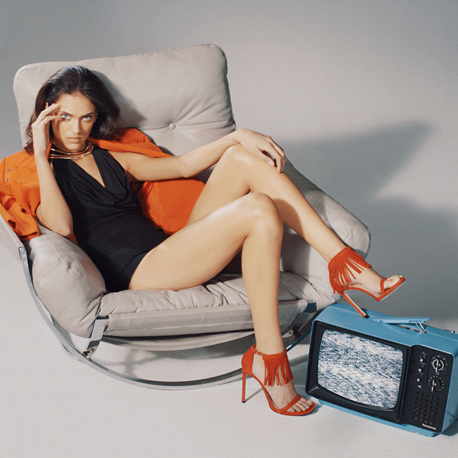

Our Services
Linen and Lime provides a wide range of services from fashion styling, image consulting, personal shopping, wardrobe assessment and special event styling for events such as weddings, debs and christenings. Worried about your business wardrobe? We’ve got you covered. Contact us today to arrange a business style makeover and let us help you become the most stylish man or woman in the entire office.

Personal Shopping
Our style, your budget, our guidance.
Feeling frumpy, style drained, or simply just sick and tired of shopping? Linen and Lime are assisting more and more women of all ages and budgets get the look and the style that’s right for them.
Our formula couldn’t be simpler. We simply listen to people to understand their needs and we those needs happen! When we dress someone it is to make them look their best. It’s not about following a fashion trend that may not necessarily suit everybody, it’s about gently helping you improve your style.No matter what the season, we will provide you with valuable advice on what works for you and why as well as what doesn’t work for you and why, meaning the next time you go shopping you will not only know where to find all of the best bargains, but you will also be able to avoid making the kind of impulse purchases that end up at the back of the wardrobe.
Contact the Lien and Lime team today and you will learn how the elements of design lines, contrast, colour, and accessories as well as the influences of movement can play a vital role in bringing an outfit together in total harmony with your style. During our shopping tip you will also learn how to….
Recognise what styles and clothes suit your figure, enhancing what you want to enhance and concealing what you want to hide.
Buy quality over quantity (especially when it comes to major pieces, suits, jackets, pants and skirts)
Choose the right accessories to help turn a great outfit into a spectacular one.
Avoid those impulse buys we are all guilty of.
Whether you are looking for a complete style makeover or simply to busy to shop for yourself, Fashion Stylists has a personal shopping solution for you. Contact our personal shopper team today and shop with confidence for ever more!
With personal shopping experience in London, Barcelona and Madrid, we the fashion capitals covered so you can shop with us with confidence of attaining the looks that are trending across all the worlds top style meccas.

Wardrobe Stylist
A professional wardrobe analysis will allow you to better understand and organize your wardrobe. By the end of this process, you will know what styles and shapes work best for you. We will do this by eliminating what doesn’t work for you and maximizing your wardrobe's efficiency so that you will never have another one of those 'nothing to wear' moments.
Why have a Wardrobe Analysis?
Do you have a wardrobe full of clothes and still feel like you have nothing to wear?
Do you feel you wear the same items of clothing all the time?
Do you think your wardrobe is outdated and want to inject some of the latest trends into it?
How it works:
The wardrobe analysis will take place in your home. This will allow me to analyze your wardrobe, establish what is lacking and fill in the missing pieces. It is an opportunity to identify the clothes you no longer wear, the clothes that no longer fit and the items in your wardrobe that are outdated. You will gain a better understanding of how to work with what is already in your wardrobe by building outfits and looks that match your lifestyle. It will also give you a solid foundation to work with for all your future purchases.
Wardrobe Analysis can take up to 2-3 hours depending on the wardrobe size.
Avoid those impulse buys we are all guilty of.
Whether you are looking for a complete style makeover or simply to busy to shop for yourself, Fashion Stylists has a personal shopping solution for you. Contact our personal shopper team today and shop with confidence for ever more!
This service is often followed up with the Personal Shopping service..

Personal Stylist
Personal Stylist
As a personal stylist, I offer a wide range of styling services for my clients. These services include personal shopping, wardrobe analysis, online styling, individual consultation, style workshops and much more. My goal is to provide a friendly and personable service, and create an individual authentic signature style for each of my clients based on their personality, lifestyle and budget. My styling service can save you time, money and even wardrobe space by ensuring you only buy versatile investment pieces that last for many seasons.
Experience
I previously worked as a fashion buyer and am currently a fashion tutor at Galway Technical Institute. While working in Dubai, I travelled extensively and discovered my passion for travel and fashion. I hold a Master's Degree in Corporate Strategy from NUIG and have completed courses in Fashion Buying and Fashion Styling at The London College of Fashion.
"My diverse career path has given me a unique perspective and skill set that is exemplified through my styling services. My style is very much elegant chic with a little bit of edge. I think everyone should have their own individual authentic style that is informed by their personality and not entirely influenced by current trends".
I hope to bring some of my style, love of fashion and success into your life.